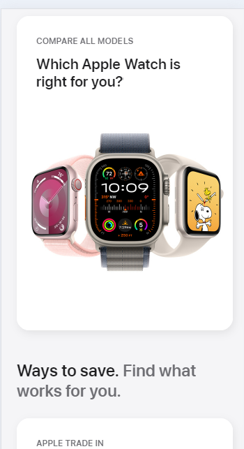

White Space
www.apple.com/shop/buy-watchApple
APple uses whitespace to make their products the undeniable focus of their page. The white space improves readibility, and scanability of the page. It also places emphasis on the content they want to present to the user.
Visual Hierarchy
www.netflix.comNetflix
Netflix uses visual heirarchy in the home page design. The Main heading in the center of the page has the largest font and they use typefaces that adjust to show the hierarchy of importance on the rest of the page. Netflix uses a Z pattern on their page to draw attention to the most important element which is thier call to action.
Hick's Law
www.google.comGoogle breaks what could be a complex task into smaller steps. They start with a simple search elment in the center of the page,along with a select few other options. Once the user receives their search results, more options become available to fine tune their search. The user can choose from recommended results or they can refine by choosing images, news, maps, etc.